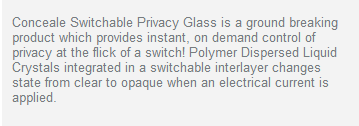

From Clear to Opaque at the flick of a switch, Conceale Switchable Privacy Glass provides instant privacy, security, solar and glare control! Conceale Glass is available in a broad range of sizes and formats to suit your needs.
Applications for Conceale Switchable Privacy Glass are endless for residential or commercial use or anywhere else there is a need for privacy or protection.
Conceale Glass eliminates the need for shades, curtains or blinds. The liquid crystal in the glass protects fine furnishings, carpets and displays from UV damage and the view of others.
FGIs Conceale glass is becoming a popular choice for builders, designers, architects and consumers.
Conceale Switchable Privacy Glass Is Ideal For:
- Office boardrooms, partitions and doors
- Commercial windows
- Residential room dividers and windows
- Presentation rooms for projector screens
- Hospitals and health clinics
- Conference rooms and private restaurant sections
- For concealed LCD, Plasma or Projector Screens